己巳日
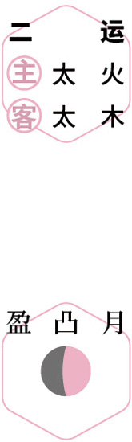
 寻梅
寻梅初夏｜节气｜ 小满 ｜时间｜ 五月廿一日至六月五日
今年小满需特别注意的健康问题：肝炎、发热、咳嗽、腹胀、消化不良、淋巴结肿大
原料：黄梅、蜂蜜或红糖、盐。
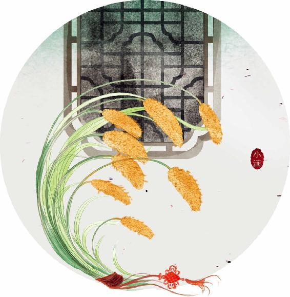
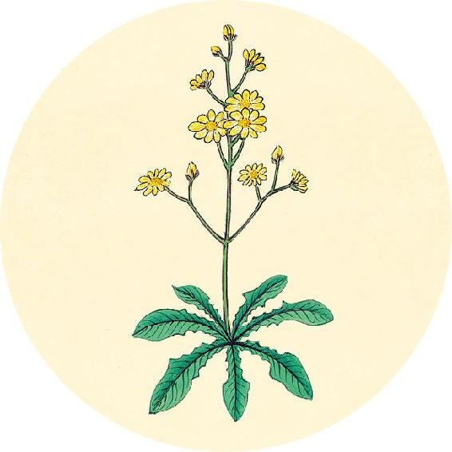
健康提示
今天是世界脊柱健康日。
人的脊柱由颈椎、胸椎、腰椎、骶椎组成。由于每天长时间使用手机及在空调环境，因此现代人的颈椎很容易出现问题。
当颈椎变形，颈椎本身可能没有感觉，但身体却会出现各种莫名其妙的不适。
翻到10月31日，自测是否有颈椎变形。
自制调理颈椎变形的颈椎枕（做法见9月2日）。
【释义】脉来弦而大、实而长，急如涌泉，这是病情加重到了危险地步；脉细微如丝，去如弦绝，则主死。
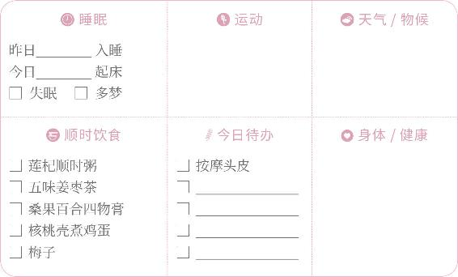

寻梅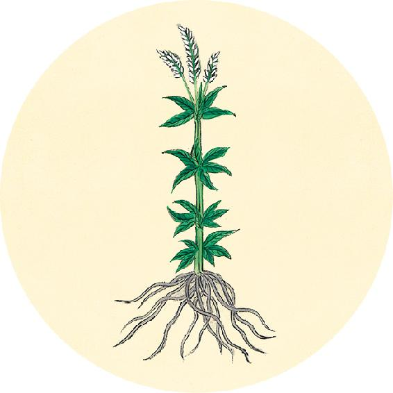
节气食方（一）
青梅酒
原料：青梅1000克、白酒1500克、蜂蜜或红糖250～500克。
做法：
1. 将少许盐放一盆水里，青梅放入浸泡一会儿，冲洗干净，沥干水分，放进广口玻璃瓶。
2. 在瓶里先放一半的糖，倒入酒，倒五六分满。
3. 盖好盖子，放在阴凉避光的地方。
4. 等先放的糖完全溶解了，再把另一半糖放进去。
5. 三个月以后就可以喝了，泡一年以上味道更好。
夫精明五色者，气之华也。
——黄帝内经·素问·脉要精微论
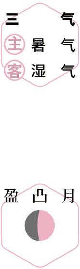
夏游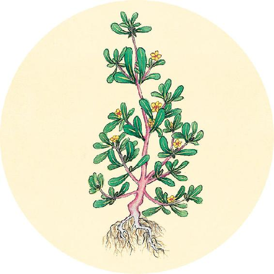
节气食方（二）
冰梅酱
原料：黄梅500克、蜂蜜或红糖250克、盐1克。
做法：
1. 梅子洗净，在凉水里加10克盐，把梅子泡24小时，去除涩味。
2. 锅里加满水，把梅子放进去，中火煮开，倒掉水。
3. 用锅铲把梅子压碎，使果肉和果核分离。
4. 加少量水，放蜂蜜或红糖、盐，小火熬制，用锅铲翻动，熬到果肉与糖融合，开始冒大泡泡就关火。
5. 挑出梅子核（可以泡水喝），把果酱装瓶放冰箱保存。
【释义】眼睛的神采、面部的五色，这都是内脏的精气所表现出来的光华。
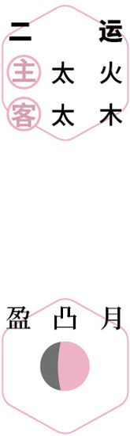
闲养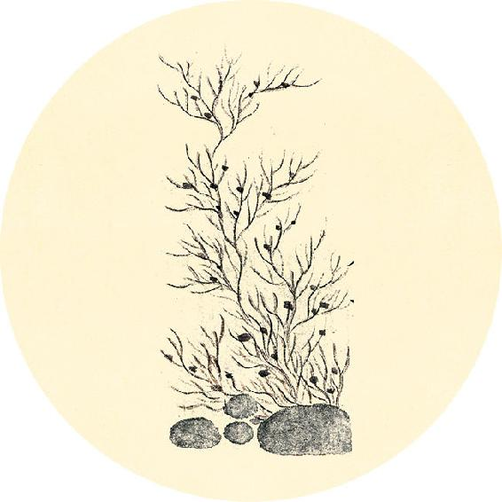
二十四节气茶养生
今年小满节气品茶推荐：莲子心茶。
小满时节心火旺，特别是考生，容易引起心烦失眠。
莲子心甘草茶
原料：莲子心2克、甘草3克。
做法：沸水冲泡饮用。
用量：一日两杯，喝到心火降下去即停止，最多不超过三天。
功效：清心火，调理舌头生疮、心烦失眠。
赤欲如白（bó，通“帛”）裹朱，不欲如赭（zhě）。
——黄帝内经·素问·脉要精微论
 清心
清心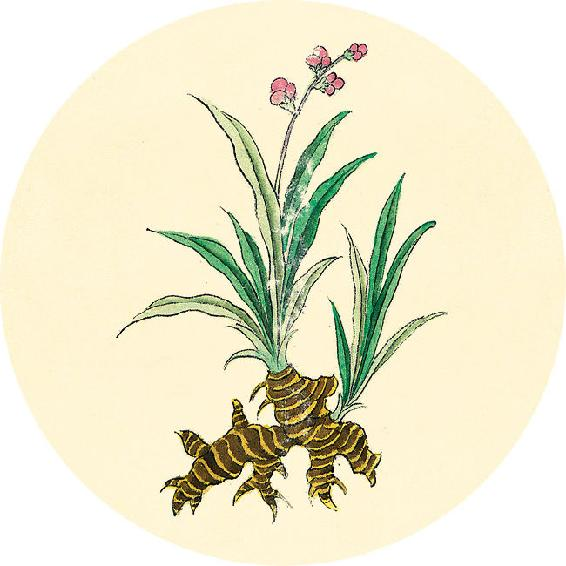
健康提示
小满节气的养生功课：补肝、排肝毒。
今年小满特殊的养生要点——
今年小满节气，注意下雨后防寒气。
保养重点：肠道、淋巴、甲状腺。
容易出现的问题：肝炎、发热、咳嗽、腹胀、消化不良、淋巴结肿大。
【释义】面部的赤色要像帛裹朱砂一样，隐约透出红润，不要像赭石那样，色赤带紫，颜色外露。
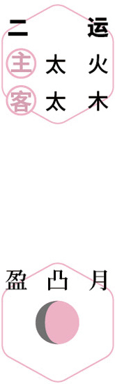
安神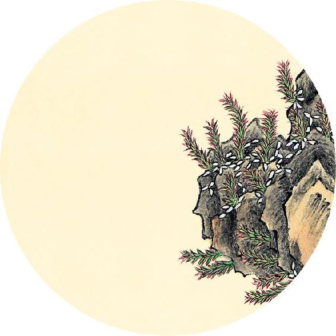
一候反思
你属于哪种失眠类型？根据体质选择相应的食方。
□ 睡觉要垫高枕头才舒服
□ 睡觉时感觉胸闷、咳嗽痰多
痰湿型：轻者，每日煮粥加1个陈皮；重者，煮粥加薤白30克。
□ 梦多，醒来后记得很清楚
□ 经常半夜醒来
肝火型：舒肝解郁茶（配方见3月22日）。
白欲如鹅羽，不欲如盐。
——黄帝内经·素问·脉要精微论
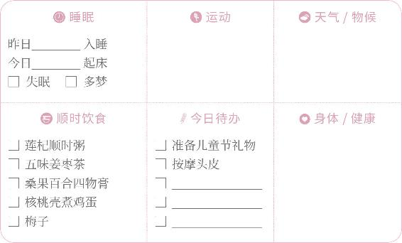
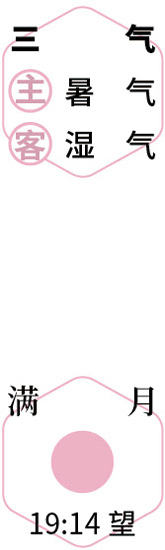
观月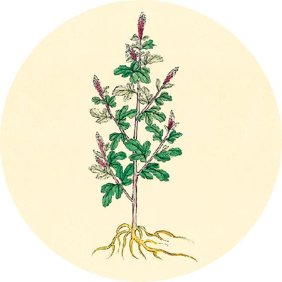
一候反思
□ 半夜口苦
胆火型：五味茱萸梅子汤（配方见10月4日），平时常吃枸杞。
□ 睡觉时手脚心发热
□ 睡梦中惊醒，心烦心悸
心虚型：甘麦大枣汤（配方见12月18日）。
□ 入睡困难
□ 容易被外界干扰而醒来
血虚型：桂圆百合银耳羹。
【释义】面部的白色要像鹅毛那样白而光洁，不要像青盐那样白而灰暗。
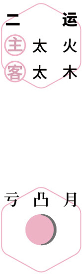
护肝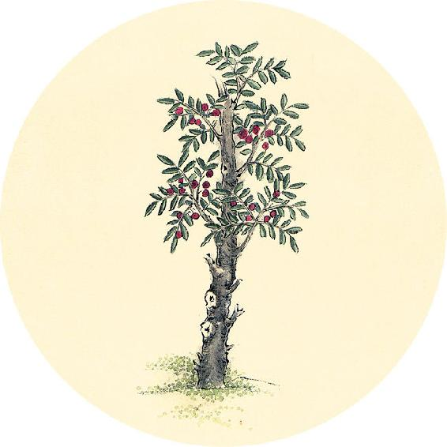
健康提示
明天是世界肠道健康日。
随着炎夏的来临，肠道病毒传染也进入高发期。
肠道病毒的感染，发病部位多不在肠道，而是可能会引起新生儿感染、呼吸道感染、脑膜炎、心肌炎等病。
其中最常见的一种肠道传染病是手足口病。手足口病传染后，也与新冠肺炎有相似之处——发热、咳嗽，甚至有生命危险，所以被列入法定传染病。
（5月29日继续）
青欲如苍璧之泽，不欲如蓝。
——黄帝内经·素问·脉要精微论
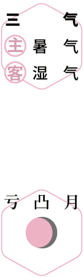
防病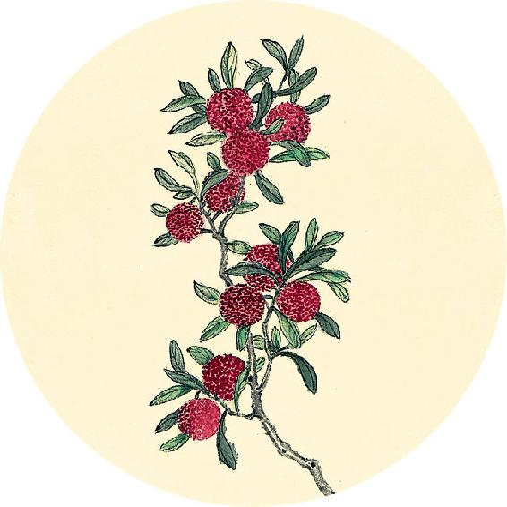
健康提示
气候以及人体内环境对肠道病毒传播有一定影响，我们可以据此分析每年肠道传染病（手足口病等）的发病概率，提前做好防范。
例如，2017年出版的顺时生活日历书（书名《时光知味》）曾预警——2018年夏季手足口病将高发。
实际情况：2019年4月，国家疾病预防控制局发布《2018年全国法定传染病疫情概况》，指出2018年手足口病发病人数居法定传染病第一位。发病人数235万人（显著高于2017年的193万和2019年的192万），是当年流感发病人数的3倍。
【释义】面部的青色要像青玉那样青而明润，不要像蓝靛那样青而沉暗。
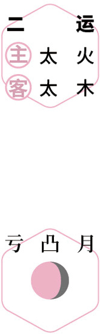
教子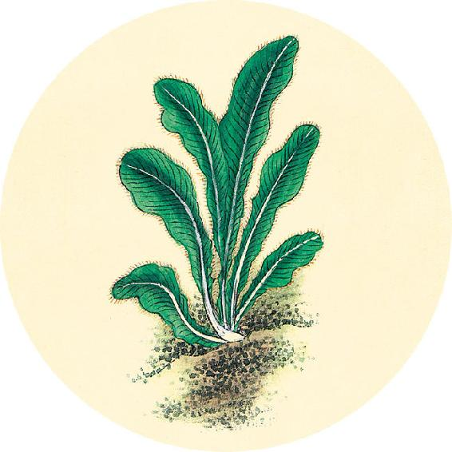
健康提示
如何预防手足口病/疱疹性咽峡炎？
1. 酒精对肠道病毒消毒效果不佳，要教孩子勤洗手换衣。
每天回家第一件事——洗手，一定要用香皂/肥皂好好地洗干净。
每天回家第二件事——给孩子换衣服，大人也要换。特别是参加儿童节活动等人多的聚会之后。
2. 保持肠道通畅，孩子便秘要重视，并及时调理。
饮食调理：见6月29日。
穴位贴敷：用清温手心贴贴足心和手心（见11月2日）。
黄欲如罗裹雄黄，不欲如黄土。
——黄帝内经·素问·脉要精微论
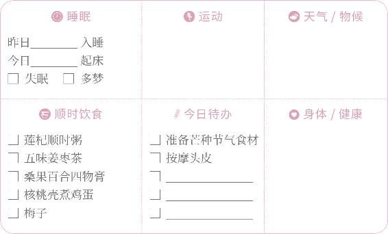
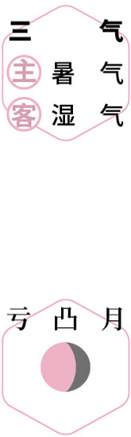
听琴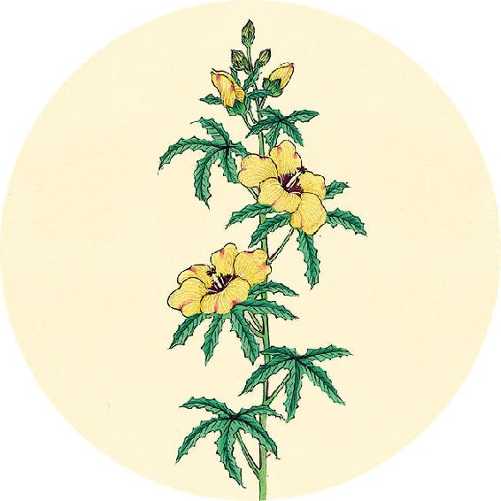
二候反思
如果自己或家人吸烟：
年龄是________
今年以来平均每天吸烟的支数是________
用年龄乘以吸烟支数，如果结果大于400，那么，得心血管病的风险很高。特别注意预防心脏病或者脑中风。
调理建议：见11月2日。
【释义】面部的黄色要像丝罗包着雄黄一样，黄而清透，不要像黄土那样，黄而暗沉。
戒烟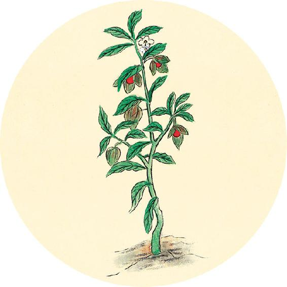
读书
“你的孩子不属于你，他们是生命的儿女，是生命自身的渴望。经由你手，与你相伴，而非为你所有。”
——纪伯伦《论孩子》
这首诗写于1923年，将近一百年来，它启发了全世界无数的父母。
黑欲如重漆色，不欲如地苍。
——黄帝内经·素问·脉要精微论
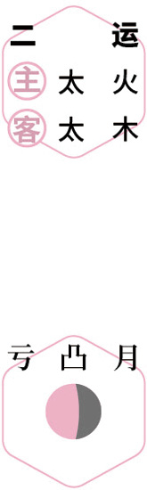
读诗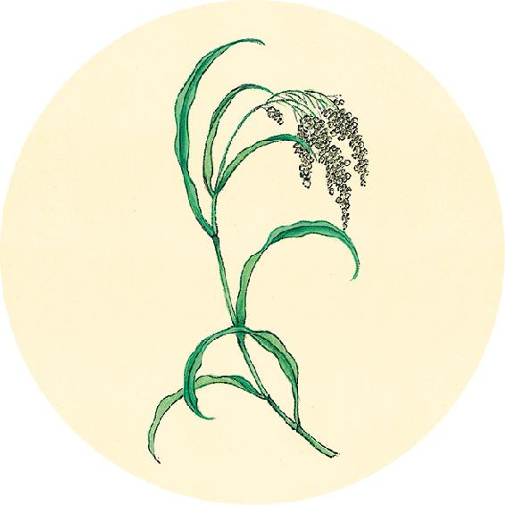
健康提示
午月养生（端午养生）
即将进入农历五月（午月），又称“毒五月”，传染病容易流行。
可提前准备以下养生材料：
1.中药香包
2.艾叶、菖蒲：悬挂于大门、泡脚、泡澡
3. 兰汤沐浴：藿香、佩兰、苍术、陈皮、金银花等各种中药（见6月12日）
4.咸鸭蛋
5.新蒜
【释义】面部的黑色要像重漆那样亮泽，不要像黑土那样枯暗。
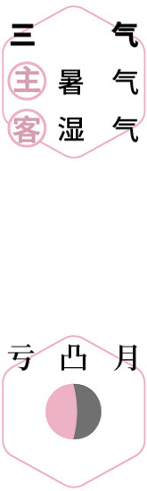
防病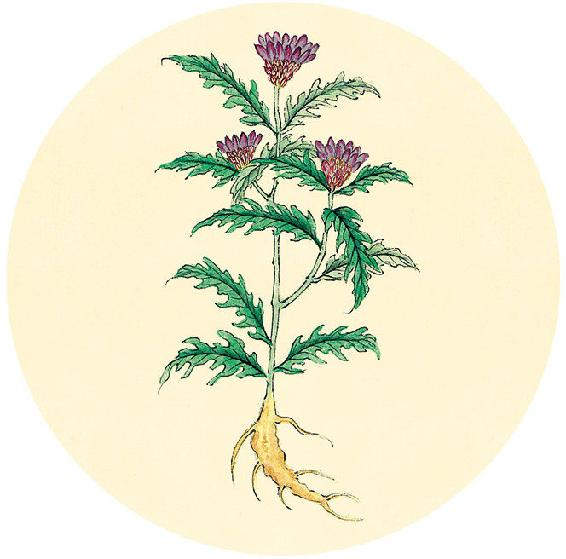
食材准备
后天进入芒种节气。
1. 樱桃鸡蛋汤（做法见6月5日）
原料：樱桃、鸡蛋、醪糟（米酒）。
2. 樱桃酒
原料：毛樱桃、纯粮酒。
3. 夏季防晒食方：胡萝卜番茄汁
原料：胡萝卜、番茄。
4. 辛丑岁三气保健方：桑果百合四物膏（从小满吃到入伏前，做法见5月13日）
原料：桑椹、百合、莲子、酸枣仁、红糖。
5.端午养生材料（见6月2日）
6.辛丑岁全年保健方：莲杞顺时粥
五色精微象见（xiàn，通“现”）矣，其寿不久也。
——黄帝内经·素问·脉要精微论
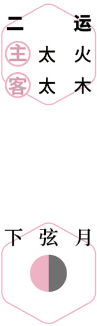
惜花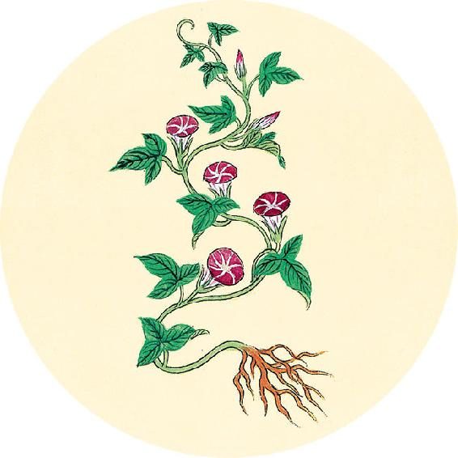
节气总结备
喝五味姜枣茶的次数________
吃核桃壳煮鸡蛋的次数________
吃梅子食方的次数________
喝桑果百合四物膏的次数________
喝莲杞顺时粥的次数________
身体哪些方面有改善_________________________
【释义】假如五脏的真脏色（指赤、白、青、黄、黑五色）外露（这是真气外脱的现象），人的寿命也就不长了。

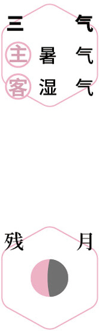
扫花